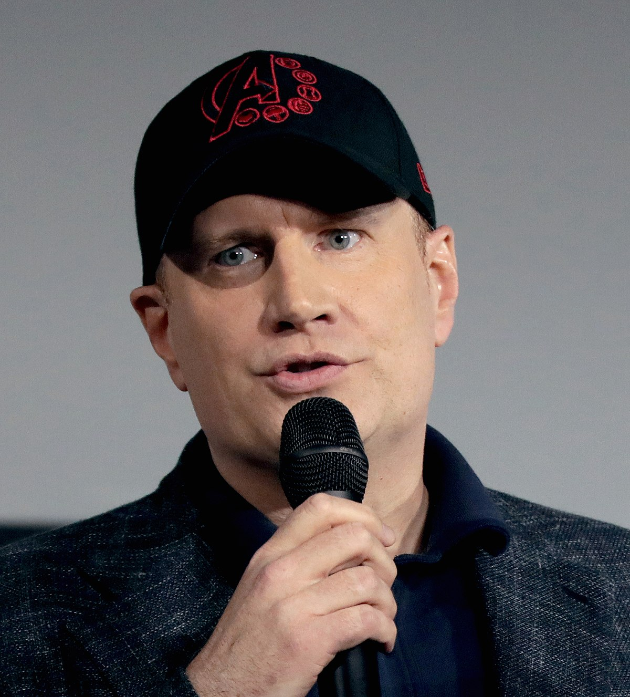

Marvel Studios ha revolucionado la industria del cine con su Universo Cinematográfico de Marvel (UCM), creando la franquicia cinematográfica más exitosa de la historia. Fundada en 1993 como Marvel Films, su transformación comenzó cuando Marvel Entertainment la reorganizó como Marvel Studios en 1996.
Kevin Feige, presidente de Marvel Studios desde 2007, ha sido la mente maestra detrás del éxito del UCM. Su visión de un universo cinematográfico interconectado comenzó con Iron Man (2008), protagonizada por Robert Downey Jr., marcando el inicio de la Fase 1 que culminaría con Los Vengadores (2012).
El UCM se divide en "Fases", cada una contando historias que se entrelazan:
- Fase 1 (2008-2012): Presentó a los héroes fundadores (Iron Man, Thor, Capitán América) y su unión en Los Vengadores.
- Fase 2 (2013-2015): Expandió el universo con Guardianes de la Galaxia y presentó la trama de las Gemas del Infinito.
- Fase 3 (2016-2019): Culminó con Avengers: Infinity War y Endgame, batallas épicas contra Thanos.
- Fase 4 (2021-2022): Introdujo nuevas generaciones de héroes y el concepto del multiverso.
Con más de 30 películas y numerosas series en Disney+, Marvel Studios ha recaudado más de $28 mil millones en taquilla mundial, estableciendo nuevos estándares para el cine de superhéroes y la narrativa serializada.